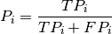
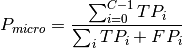
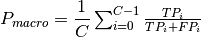

learninspy.utils package¶
Submódulos¶
learninspy.utils.checks¶
- class learninspy.utils.checks.CheckGradient(functions)¶
Clases base: object
Clase para chequear la correcta implementación del gradiente de una función, mediante diferenciación numérica. Basado en http://ufldl.stanford.edu/wiki/index.php/Gradient_checking_and_advanced_optimization
Parámetros: functions – list de strings, correspondientes a las keys de un dict de funciones. - check_numericalgradient()¶
- compute_numericalgradient(J, theta)¶
- class learninspy.utils.checks.CheckGradientActivation(functions)¶
Clases base: learninspy.utils.checks.CheckGradient
Clase para chequear la correcta implementación del gradiente de una función de activación perteneciente a activations.
>>> check = CheckGradientActivation(['Tanh', 'ReLU']) >>> bad_gradients = check() >>> if bad_gradients is None: >>> print 'Gradientes de activaciones OK!' >>> else: >>> indexes = np.array(range(2)) >>> index_badgrad = indexes[bad_gradients] >>> raise Exception('El gradiente de las posiciones ' + str(index_badgrad) + ' se encuentra mal implementado!')
- class learninspy.utils.checks.CheckGradientLoss(function)¶
Clases base: learninspy.utils.checks.CheckGradient
Nota
Experimental, sin terminar.
- check_numericalgradient()¶
- compute_numericalgradient(J, theta, target)¶
learninspy.utils.data¶
- class learninspy.utils.data.LabeledDataSet(*args)¶
Clases base: object
Clase útil para manejar un conjunto etiquetado de datos. Dicho conjunto se almacena como un pyspark.rdd.RDD donde cada entrada posee una lista de features y su correspondiente label. Se proveen funcionalidades para manejo de archivos, así como para partir el conjunto de datos (e.g. train, valid y test).
Parámetros: data – list o numpy.array o pyspark.rdd.RDD, o bien None si se desea iniciar un conjunto vacío. - collect(unpersist=True)¶
Devuelve el conjunto de datos como lista, mediante la aplicación del método collect() sobre un pyspark.rdd.RDD.
Parámetros: unpersist – bool, indicando si además se quiere llamar al método unpersist() del pyspark.rdd.RDD alojado. Devuelve: list
- features¶
Devuelve sólo las características del conjunto de datos, en el correspondiente orden almacenado.
Devuelve: pyspark.rdd.RDD
- labels¶
Devuelve sólo las etiquetas del conjunto de datos, en el correspondiente orden almacenado.
Devuelve: pyspark.rdd.RDD
- load_file(path, pos_label=-1)¶
Carga de conjunto de datos desde archivo. El formato aceptado es de archivos de texto, como CSV, donde los valores se separan por un caracter delimitador (configurable en parse_point()).
Parámetros: - path – string, indicando la ruta de donde cargar los datos.
- pos_label – int, posición o n° de elemento de cada línea del archivo, que corresponde al label (por defecto es -1, que corresponde a la última posición).
- save_file(path)¶
Guardar conjunto de datos en archivo de texto.
Parámetros: path – string, indicando la ruta en donde se guardan los datos.
- shape¶
Devuelve el tamaño del conjunto de datos alojado.
Devuelve: tuple, de cantidad de filas y columnas.
- split_data(fractions, seed=123)¶
Particionamiento del conjunto de datos, en base a las proporciones dadas por fractions. Se hace mediante el uso de la función split_data().
- class learninspy.utils.data.StandardScaler(mean=True, std=True)¶
Clases base: object
Estandariza un conjunto de datos, mediante la sustracción de la media y el escalado para tener varianza unitaria. Soporta RDDs usando la clase StandardScaler de pyspark.mllib.
Parámetros: - mean – bool, para indicar que se desea centrar conjunto de datos restándole la media.
- std – bool, para indicar que se desea normalizar conjunto de datos diviendo por el desvío estándar.
>>> train = np.array([[-2.0, 2.3, 0.0], [3.8, 0.0, 1.9]]) >>> test = np.array([[-1.0, 1.3, -0.5], [1.8, 2.2, -1.5]]) >>> standarizer = StandardScaler(mean=True, std=True) >>> standarizer.fit(train) >>> standarizer.transform(train) array([[-0.70710678, 0.70710678, -0.70710678],[ 0.70710678, -0.70710678, 0.70710678]]) >>> standarizer.transform(test) array([[-0.46327686, 0.09223132, -1.07926824],[ 0.21944693, 0.64561923, -1.82359117]])
- fit(dataset)¶
Computa la media y desvio estándar de un conjunto de datos, las cuales se usarán para estandarizar datos.
Parámetros: dataset – pyspark.rdd.RDD o numpy.array o LabeledDataSet
- transform(dataset)¶
Aplica estandarización sobre dataset.
Parámetros: dataset – pyspark.rdd.RDD o numpy.array o LabeledDataSet
- learninspy.utils.data.label_data(data, label)¶
Función para etiquetar cada elemento de data con su correspondiente de label, formando una list de elementos pyspark.mllib.regression.LabeledPoint.
Parámetros: - data – list o numpy.array, correspondiente a features
- label – list o numpy.array, correspondiente a labels
Devuelve: list
- learninspy.utils.data.label_to_vector(label, n_classes)¶
Función para mapear una etiqueta numérica a un vector de dimensión igual a n_classes, con todos sus elementos iguales a 0 excepto el de la posición label.
Parámetros: - label – int, pertenenciente al rango [0, n_classes - 1].
- n_classes – int, correspondiente a la cantidad de clases posibles para label.
Devuelve: numpy.array
- learninspy.utils.data.split_data(data, fractions, seed=123)¶
Split data en sets en base a fractions.
Parámetros: - data – list o np.array
- fractions – list [f_train, f_valid, f_test]
- seed – int, semilla para el random
Devuelve: list de conjuntos (e.g. train, valid, test)
- learninspy.utils.data.subsample(data, size, balanced=True, seed=123)¶
Muestreo de data, con resultado balanceado por clases si se lo pide.
Parámetros: - data – list of LabeledPoint
- size – int, tamaño del muestreo.
- seed – int, semilla del random.
Devuelve: list
learninspy.utils.evaluation¶
- class learninspy.utils.evaluation.ClassificationMetrics(predicted_actual, n_classes)¶
Clases base: object
Métricas para evaluar en problemas de clasificación
Parámetros: - predicted_actual – list de (predicted, actual) pairs
- n_classes – int cantidad de clases
>>> predict = [0, 1, 0, 2, 2, 1] >>> labels = [0, 1, 1, 2, 1, 0] >>> metrics = ClassificationMetrics(zip(predict, labels), 3) >>> metrics.accuracy() 0.5 >>> metrics.f_measure() 0.5499999999999999 >>> metrics.precision() 0.5 >>> metrics.recall() 0.611111111111111 >>> metrics.confusion_matrix() array([[1, 1, 0], [1, 1, 1], [0, 0, 1]])
- accuracy(label=None)¶
Calcula la exactitud de la clasificación, dada por la cantidad de aciertos sobre el total.
Parámetros: label – int entre {0,C} para indicar sobre qué clase evaluar. Si es None se evalúa sobre todas. Devuelve: double
- confusion_matrix()¶
Matriz de confusión resultante, donde las columnas corresponden a predicted y están ordenadas en forma ascendente por casa clase de actual.
- f_measure(beta=1, label=None, macro=True)¶
- precision(label=None, macro=True)¶
Calcula la precisión de la clasificación, dado por la cantidad de verdaderos positivos (i.e. el número de items correctamente clasificados) dividido por el total de elementos clasificados para una clase dada (i.e. la suma de los verdaderos positivos y falsos positivos, que son los items incorrectamente clasificados de dicha clase). Ello se resume en la siguiente fórmula:

Parámetros: - label – int entre {0,n_classes - 1} para indicar sobre qué clase evaluar. Si es None se evalúa sobre todas.
- macro – bool, que indica cómo calcular el precision sobre todas las clases (True para que sea macro y False para que sea micro).
Siendo C la cantidad de clases, las fórmulas son:


Devuelve: double
- recall(label=None, macro=True)¶
learninspy.utils.feature¶
learninspy.utils.fileio¶
- learninspy.utils.fileio.get_logger(name='Learninspy', level=20)¶
- learninspy.utils.fileio.is_mat_file(path)¶
- learninspy.utils.fileio.is_text_file(path)¶
- learninspy.utils.fileio.label_point(row, pos_label=-1)¶
- learninspy.utils.fileio.load_file(path, pos_label=-1, varname=None)¶
- learninspy.utils.fileio.parse_point(line, delimiter='[ ,|;"]+')¶
Convierte un string en list, separando elementos mediante la aparición un caracter delimitador entre ellos.
Parámetros: - line – string, contenedor de los caracteres que se desea separar.
- delimiter – string, contenedor de los posibles caracteres delimitadores.
Devuelve: list con elementos deseados.
- learninspy.utils.fileio.save_file(data, path)¶
learninspy.utils.plots¶
- learninspy.utils.plots.plot_activations(params)¶
Ploteo de las activaciones establecidas para una red neuronal. Se representan como señales 1-D, en un dominio dado.
Nota
Experimental
Parámetros: params – parámetros del tipo NetworkParameters.
- learninspy.utils.plots.plot_autoencoders(network)¶
Ploteo de la representación latente un StackedAutoencoder dado.
Nota
Experimental
Parámetros: network – red neuronal, del tipo StackedAutoencoder.
- learninspy.utils.plots.plot_confusion_matrix(matrix)¶
Ploteo de una matrix de confusión, realizada mediante ClassificationMetrics.
Parámetros: matrix – numpy.array
- learninspy.utils.plots.plot_matrix(matrix, ax=None, values=True, show=True)¶
Ploteo de un arreglo 2-D.
Parámetros: - matrix – numpy.array o list, arreglo a graficar.
- ax – matplotlib.axes.Axes donde se debe plotear. Si es None, se crea una instancia de ello.
- values – bool, para indicar si se desea imprimir en cada celda el valor correspondiente.
- show – bool, para indicar si se debe imprimir inmediatamente en pantalla mediante matplotlib.pyplot.show().
- learninspy.utils.plots.plot_neurons(network)¶
Ploteo de la representación latente de una Red Neuronal. .. note:: Experimental
Parámetros: network – red neuronal del tipo NeuralNetwork.